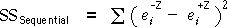

We now give two additional ways to interpret the sequential sums of squares.
Sequential changes to residuals
As each explanatory variable is added to the model in turn, the residuals get closer to zero — their sum of squares becomes smaller. The sequential sum of squares for a variable Z can therefore be written in the following form where the superscripts ±Z refer to whether or not variable Z is in the model. (There may be additional explanatory variables in the model but our notation below does not mention them.)

It is difficult to prove, but the sequential sum of squares can also be expressed in terms of the changes to the individual residuals from adding the variable Z.

Sequential changes to fitted values
In similar way, as each explanatory variable is added to the model in turn, the fitted values get closer to the observed response values. Since the the fitted values and residuals are closely related,

it follows that the sequential sum of squares is also the sum of squares of the changes to the fitted values from adding Z,

Oxygen uptake when running
The diagram below shows how the fitted values change as variables are added to the model in the order Weight, Running time, Resting heart rate, and Running heart rate.
Click the red arrows to calculate the difference between the fitted values of successive models. The sequential sum of squares from adding the variable is the sum of squares of these differences.
Select Residuals from the pop-up menu and again click red arrows. The sequential sum of squares can either be found from the difference in residual sum of squares or as the sum of squares of the individual differences.
Graphical display of sequential sums of squares
The above result allows us to represent sequential sums of squares graphically for many models by connecting the fitted values from the models with and without the variable on a plot of the data. The sequential sum of squares is the sum of squares lengths of these lines.
We illustrated explained sums of squares with this type of diagram in earlier chapters for regression models with 1 and 2 explanatory variables, models with quadratic terms and models for data with several groups. We will also use similar diagrams to illustrate sequential sums of squares for more advanced models.